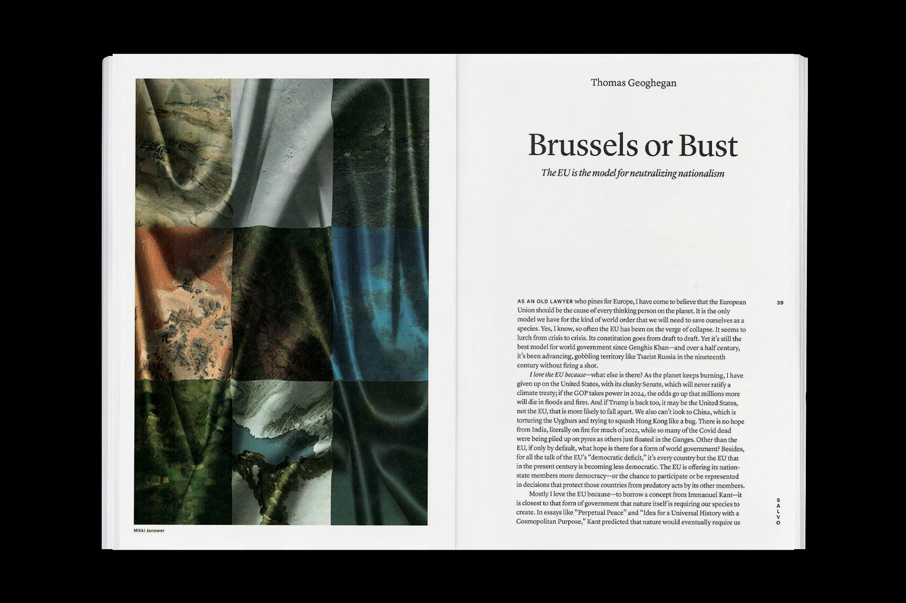
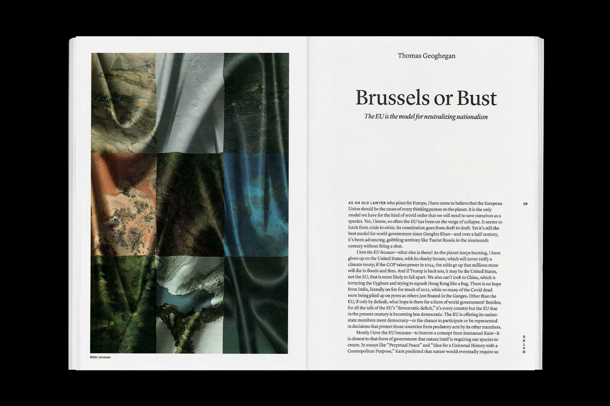

Illustration
The Baffler
Illustrations for The Baffler. Initially created as competing directions for the same assignment, the two were published years apart in strikingly different contexts.
The cover for issue 61, Space Opera, features wide-angle stills of planet Earth as seen from space. Footage from the Apollo missions was combined simply, leaving room for interpretation: the result looks equal parts a flag of self-sovereignty, a diagrammatic close-up, or an abstract meditation on space.
In Issue 67, The National Interest, birds-eye landscapes come together to form a tapestry. The work accompanies an argument for global confederacy, using the EU as a model for a federation of republics.
Art direction by No Ideas.
 
